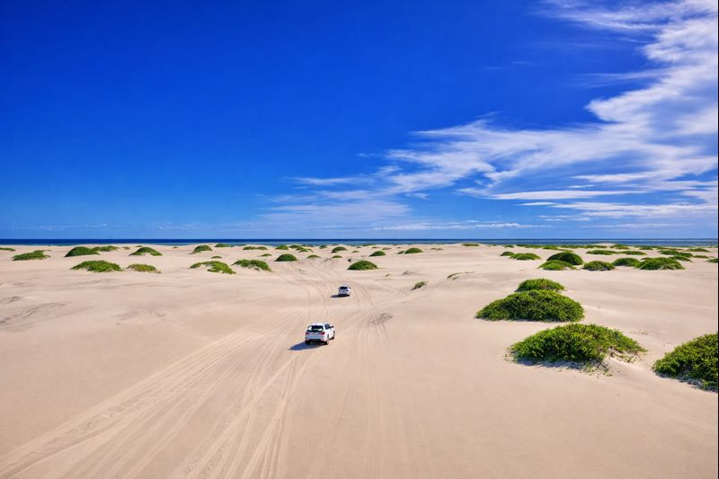

Hargeisa
55k
Laas Geel
Peintures rupestres datant de 5 000 à 9 000 ans, joyau du Néolithique

RetourLe berceau des civilisations maritimes et le souffle du désert
La Somalie, située à la pointe stratégique de la Corne de l'Afrique, est une destination d'une richesse historique et naturelle insoupçonnée. Avec la plus longue côte du continent, elle offre des plages de sable blanc d'une beauté époustouflante comme Lido à Mogadiscio. Terre de commerce millénaire, elle abrite des trésors archéologiques mondiaux comme les peintures rupestres de Laas Geel, miraculeusement préservées. Entre montagnes verdoyantes au nord et cités historiques ottomanes, la Somalie entame une renaissance touristique, offrant aux voyageurs audacieux une expérience authentique au cœur d'une culture de poésie et d'hospitalité.
Découvrez les 15 joyaux de la Corne de l'Afrique
Peintures rupestres datant de 5 000 à 9 000 ans, joyau du Néolithique

Symbole de la renaissance de la capitale, eaux cristallines et ambiance festive

Le cœur historique médiéval avec son architecture unique en corail

Vestiges de l'époque ottomane et britannique sur les rives du Golfe d'Aden

Chaîne de montagnes abritant des forêts de genévriers et une biodiversité unique

L'un des plus grands marchés de bétail d'Afrique, spectacle vibrant de la culture nomade

Escarpements vertigineux plongeant vers la mer et arbres à encens millénaires

Ancien port du Sultanat d'Adal abritant l'une des plus vieilles mosquées d'Afrique

Sept cascades spectaculaires nichées au cœur des montagnes du nord

Port en plein essor avec des plages sauvages et une vie marine riche

Ville portuaire du sud réputée pour ses plages et son climat tropical

Destination balnéaire paisible et historique au nord de Mogadiscio
Récifs coralliens spectaculaires et eaux turquoises pour la plongée
La première zone protégée du pays, où la brousse rencontre l'océan
Collection retrouvée d'art africain, de manuscrits et de reliques maritimes
La nation des poètes et des navigateurs de l'Océan Indien.
La culture somalienne est une fusion unique d'influences africaines, arabes et indiennes, forgée par des millénaires de commerce maritime. Connue comme la "Nation des Poètes", la Somalie possède une tradition littéraire orale d'une richesse incroyable. L'identité somalienne est aussi profondément marquée par le nomadisme pastoral, symbolisé par le noble chameau, et par un héritage islamique ancien visible dans les mosquées de Zeila et de Mogadiscio. Aujourd'hui, la créativité somalienne s'exprime à travers une diaspora dynamique et une jeunesse locale résiliente qui réinvente l'art et la musique.
La poésie est l'âme de la Somalie, utilisée pour résoudre les conflits, célébrer l'amour et transmettre l'histoire.
Le glorieux héritage des sultanats maritimes qui dominaient le commerce entre l'Afrique et l'Asie.
Le chameau est le pilier de la vie et de l'économie, symbole de richesse et de survie dans le désert.
Les danses traditionnelles et la musique moderne qui animent les mariages et les fêtes somaliennes.

L'artisanat somalien d'exception. De l'encens sacré aux tissus Alindi tissés à la main.
 Gourmet
Gourmet
Le meilleur encens du monde, récolté dans les montagnes de Cal Madow. Pur et intensément parfumé.
 Mode
Mode
Tissage somalien iconique réalisé à la main sur des métiers anciens, utilisé pour les vêtements de fête.
 Luxe
Luxe
Colliers et bracelets ciselés selon le savoir-faire des orfèvres de la vieille ville de Mogadiscio.
Récoltée de manière durable dans le désert somalien, connue pour ses propriétés médicinales et son parfum.
Vannerie robuste et décorative aux motifs géométriques, faite de fibres de palme séchées.
Huile pressée à froid de manière artisanale, base de la cuisine et des soins de beauté somaliens.

Mogadiscio, Luxe & Aéroport

Mogadiscio, Prestige Diplomatique

Hargeisa, Centre-ville

Hargeisa, Moderne & Spacieux

Berbera, Charme historique

Lido Beach, Mogadiscio
La cuisine somalienne est un festin d'épices et de saveurs métissées, reflet de sa position de carrefour entre l'Afrique et l'Asie.
Le riz épicé national, cuit avec du cumin, de la cannelle et servi avec du mouton ou de la chèvre.
Petits triangles de pâte frits fourrés à la viande hachée épicée, incontournables.
Crêpe somalienne fermentée, base du petit-déjeuner servie avec du miel ou du foie.
Dés de viande (bœuf ou chèvre) sautés avec des poivrons et des oignons.
Poisson frais de l'océan, mariné aux épices somaliennes et grillé sur le feu.
Pain plat traditionnel cuit dans un four en terre cuite (tinnour).
Héritage italien, pâtes servies avec une sauce tomate épicée et souvent une banane.
Thé somalien infusé avec de la cardamome, du gingembre, du girofle et du lait.
Confiserie sucrée et épicée faite pour les grandes occasions et mariages.
Boisson rafraîchissante issue des vergers des rives du fleuve Chabelle.
Pain plat feuilleté croustillant, proche du paratha indien.
Bouillie de maïs consistante, servie avec du lait frais ou un ragoût.
Découvrez la vitalité culturelle somalienne à travers ses foires littéraires et ses célébrations nationales.
Le plus grand festival littéraire de la Corne de l'Afrique, célébrant les poètes et auteurs (Juillet).
Festivités massives marquant l'unification de la Somalie (1er Juillet) dans toutes les villes.
Célébration annuelle de la musique somalienne contemporaine sur la plage de Lido.
C'est la période idéale pour visiter les côtes. Le temps est ensoleillé et les brises marines rendent la chaleur supportable.
Appelée "Gu", cette saison apporte la vie aux plateaux et aux montagnes. Les paysages deviennent luxuriants mais les déplacements peuvent être plus lents.
La situation s'améliore mais reste complexe. Voyagez toujours avec un service de sécurité local reconnu et suivez les conseils de votre ambassade.
Visa obligatoire. Les procédures varient selon que vous visitez Mogadiscio ou Hargeisa. Vérifiez les régulations avant tout voyage.
Pays conservateur. Une tenue décente couvrant les épaules et les jambes est requise. Le voile est recommandé pour les femmes par respect local.
Le Shilling Somalien est utilisé, mais les Dollars US et le paiement mobile (EVC Plus) sont les moyens de paiement dominants.
Expert Mogadiscio & Histoire
Ahmed est un historien local passionné qui vous fera découvrir les secrets de Hamar Weyne et l'histoire maritime de la capitale.
Experte Culturelle & Laas Geel
Spécialiste de l'art rupestre et des traditions nomades, Fahma vous guidera dans les paysages majestueux du nord.
Guide Plongée & Côte
Passionné par l'Océan Indien, Omar vous fera découvrir les meilleurs spots de snorkeling autour de Zeila et Warsheikh.